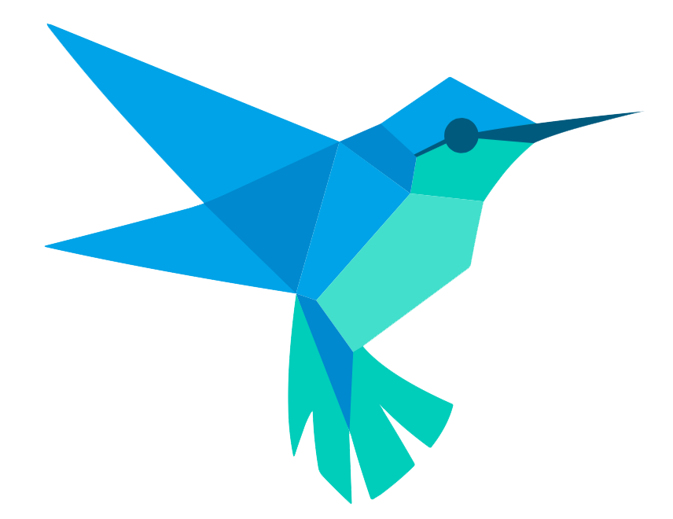
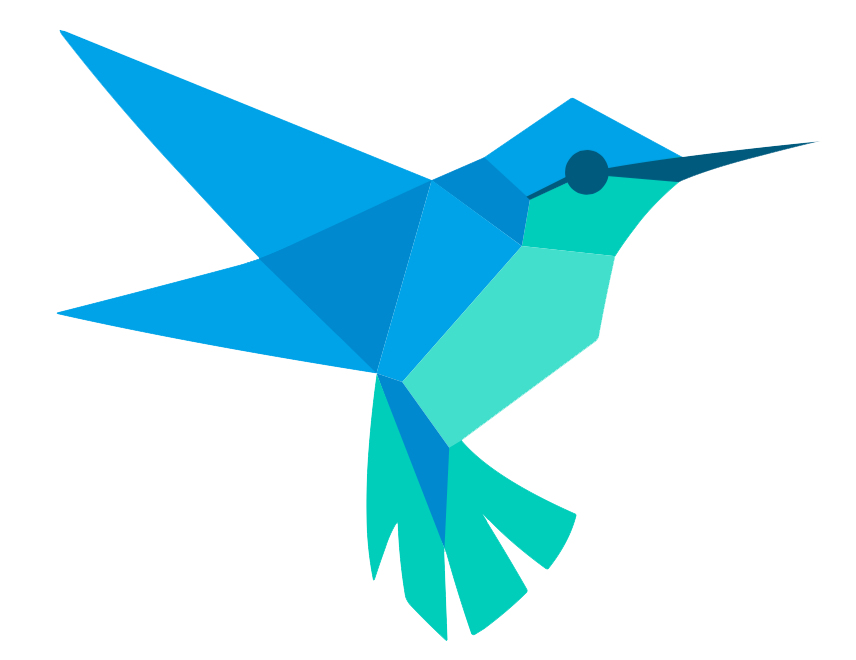

I'm Gene Elpie, a
|
with a passion for creating impactful digital solutions and visually compelling designs. I specialize in transforming ideas into interactive experiences that resonate with audiences.

I'm Gene Elpie, a
with a passion for creating impactful digital solutions and visually compelling designs. I specialize in transforming ideas into interactive experiences that resonate with audiences.
Path of Progress
Bachelor of Science in Information Technology
Boac, Marinduque, Philippines
g.landoyelpie@gmail.com
Bachelor of Science in Information Technology
Major in Software Development
Aug 2022 – June 2026
Marinduque State University
Science, Technology, Engineering, and Mathematics
Aug 2020 – July 2022
Marinduque National High School
Infocus Publication
DICT Hack4Gov3
Y4IT Research Summit
DOST – RICE
DepEd – RSTF
College of Information and Computing Sciences
Marinduque State University
Infocus Publication Unit & Broadcasting
Civil Service Commission (CSC)
Marinduque National High School
Tools and Technologies
7 years of experience in graphic design, specializing in branding, layout, and digital content creation. Skilled at turning concepts into compelling visuals that communicate clearly and leave a lasting impression. Experience includes working with student publications, freelance clients, and various organizations—delivering high-quality designs for logos, posters, social media content, magazines, and more. Known for clean layouts, strong typography, and a sharp eye for detail.

5 years of experience creating engaging and impactful content for various platforms. From promotional materials and event highlights to social media content and short documentaries, every project is approached with a strong sense of storytelling and creativity. Experience includes freelance work, student-led productions, and collaborations with organizations. Reliable, detail-oriented, and able to meet deadlines without compromising quality.
3 years of experience managing brand presence and engagement through Meta Business Suite. Focused on creating effective content, scheduling posts, running ad campaigns, and analyzing performance to improve reach and impact. Skilled in managing Facebook and Instagram pages, handling insights, and boosting content to drive audience growth. Experienced in creating graphics, writing captions, and maintaining a consistent brand voice across platforms.

2 years of experience designing and building interactive games using modern development tools and frameworks. Skilled in both gameplay programming and UI design, with a focus on creating smooth, engaging user experiences. Worked on indie projects, student research-based games, and prototypes aimed at innovation and education. Always exploring new ideas and pushing creative boundaries through code and design.


 


3 years of experience building Android applications using Java, Android Studio, and Flutter. Skilled in developing both native and cross-platform apps, with a focus on performance, clean UI, and smooth user interaction. Proficient in Android SDK, XML layouts, Firebase integration, RESTful APIs, local databases (SQLite, Room). Projects include student apps, freelance tools, and prototypes—built with attention to functionality, and design.
4 years of experience building responsive, user-focused websites and web applications. Skilled in both front-end and back-end development, with a strong foundation in clean code, modern design, and functionality. Projects range from personal websites and client portfolios to full-stack systems with dynamic content, authentication, and database integration. Focused on performance, accessibility, and delivering seamless user experiences across all devices.


Words from Clients and Colleagues
College of Information and Computing Sciences - Lecturer
“ One of the best qualities of a good leader is being someone others can count on; someone who shows up and gives their best no matter the challenge. That’s who Mr. Landoy is. As someone who has taught him in previous courses, especially during group projects, I’ve seen how he always gives his full effort, not just helping, but truly committing to the task like it’s his own. Apparently, he doesn’t do things for show, but deep down, Mr. Landoy hopes his efforts are seen and appreciated. Like anyone who works hard, a simple recognition gives him that extra push to keep going. He may not say it out loud, but being appreciated reminds him that what he’s doing matters. ”
College of Information and Computing Sciences
“Mr. Landoy is the kind of teammate who brings stability and quiet strength to any group. He doesn’t need to stand out to make a difference—his consistency, support, and genuine commitment naturally lift the entire team. Always reliable, always present, and always working with purpose.”
Information Technology
“Mr. Landoy stands out not just for his technical abilities but for how well he works with others. He brings strong skills to the table, whether in design, development, or collaboration, and uses them to help the team succeed. He listens, contributes thoughtfully, and stays focused on shared goals. Reliable, skilled, and easy to work with, he is the kind of teammate every project needs.Mr. Landoy stands out not just for his technical abilities but for how naturally he works within a team. Whether in design, development, or collaborative problem-solving, he consistently brings valuable skills and a focused mindset to every task. He is the kind of person who listens first, contributes with intention, and always puts the success of the team above personal credit."
Information Technology
“Mr. Landoy leads with purpose, not pressure. He knows how to guide a team with clarity, patience, and confidence, making sure everyone feels heard and supported. What sets him apart is his ability to stay calm under pressure while staying focused on the bigger picture. ”
Educational System Technological Institute - Computer Science
“ Mr. Landoy is one of the most reliable and technically skilled professionals I’ve had the pleasure of working with. He consistently delivers high-quality results and stays updated with the latest technologies, ensuring that every project is both efficient and future-ready. What makes him truly stand out is his dedication to client satisfaction. He listens carefully, communicates clearly, and always goes the extra mile to make sure the final output exceeds expectations. His strong sense of responsibility and attention to detail make him someone you can trust, not just to get the job done, but to do it with excellence. If you’re looking for someone who is both technically sharp and service-oriented, Mr. Landoy is the kind of professional you want on your team.”
This is your gateway to connect with me directly. Whether you have inquiries, feedback, or simply want to say hello.